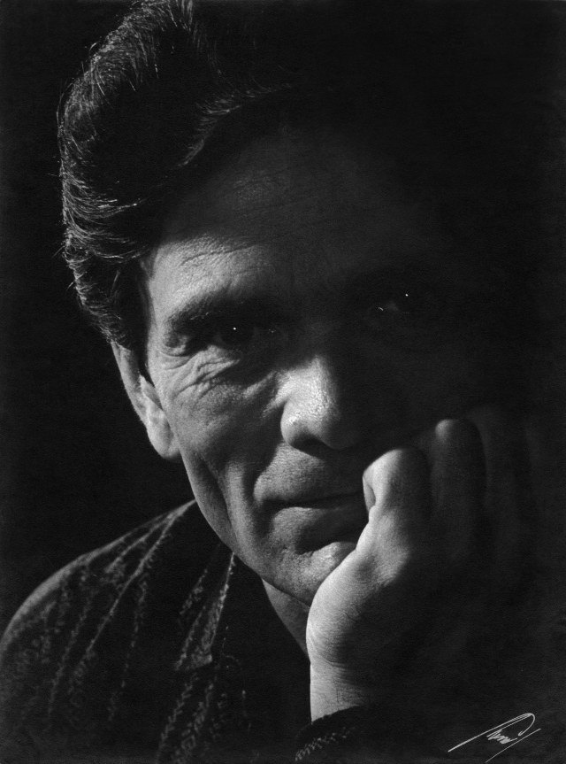

Giuseppe Giannotti cerca la poesia dove la materia resiste: una luce, un cassetto, un pontile d'inverno. Non spiega, lascia che l'immagine faccia il suo lavoro. Vive ad Aulla, in Lunigiana, dove fa il farmacista. La sera conduce Stregati, un programma di poesia al buio.
Garder le calme devant la dissonance
Claude Sautet, epitaffio a Montparnasse
Novità
Ultimi quindici giorni
Stregati, puntata speciale: Ezra Pound, nel giorno del suo compleanno. Su YouTube
Terzo premio per La quercia al contest di poesia del Premio Internazionale Luce Apuana – Carità e Donarsi. I premi
Stregati: la puntata su Riccardo Mannerini. Su YouTube
Un articolo su Pascale Ogier e François Truffaut, morti a Parigi a quattro giorni di distanza nell'ottobre 1984, e sulla poesia che li tiene insieme. Leggi
Apre la newsletter: una lettera a settimana dopo Stregati, il poeta della puntata e due osservazioni. Iscriviti
Pubblicato il bando del Premio Intercontinentale di Arte Letteraria «Le Nove Muse» 2026–27: Parma, scadenza 30 marzo 2027. La pagina del premio
Stregati: la puntata su Arthur Rimbaud. Su YouTube
Secondo premio al Premio Pasolini-Parigi, poesia edita, per La Costruzione di un'Immagine. I riconoscimenti
Poesia del giorno

Foto: Anatole Saderman, 1962 · Wikimedia Commons · pubblico dominio in Argentina
Pier Paolo Pasolini
Nato a Bologna il 5 marzo 1922 · morto a Ostia il 2 novembre 1975
Diario è una camminata per Roma: la Tuscolana, il Mandrione, gli archi sulla ferrovia, la notte di Santo Stefano dopo la pioggia. Dentro la camminata c'è una domanda, su che cosa investire la propria libertà, e una risposta che Pasolini stesso mette tra virgolette. Poi la chiusa: pensare ad altro, e una vita che comincia.
Diario
sapendo di dover morire... - di una morte
"come investimento della libertà"! Penso
ad altro, ad altro. Comincia una vita sconosciuta.
Giuseppe l'ha letta a Roma il 18 aprile 2026, al Pommidoro di San Lorenzo, per l'Omaggio a Pasolini. L'intervento di quel giorno
Frammento. Pasolini è protetto dal diritto d'autore: Diario, dalle Poesie marxiste abbozzate (1964-1965), si legge intera in Pier Paolo Pasolini, Tutte le poesie, Mondadori, «I Meridiani».
Foto da La Fiera Letteraria, n. 20, 18 maggio 1952 · Wikipedia · pubblico dominio in Italia
Clemente Rebora
Nato a Milano il 6 gennaio 1885 · morto il 1° novembre 1957
Rebora pubblicò i Frammenti lirici nel 1913. Fu al fronte nel 1915 e ne tornò per un ricovero. Nel 1922 uscirono i Canti anonimi, pochi anni prima della conversione: nel 1931 entrò tra i rosminiani, nel 1936 fu ordinato sacerdote.
Dall'imagine tesa
Dall'imagine tesa
vigilo l'istante
con imminenza di attesa –
Tre versi bastano a fissare una postura: qualcuno resta sveglio dentro un'immagine e aspetta, senza sapere ancora che cosa arriverà. L'edizione commentata ricorda che quell'attesa può essere di una donna amata o di una conversione. Il trattino finale lascia il verso aperto.
Ritratto: Joseph Severn, 1819, National Portrait Gallery, Londra · Wikimedia Commons · pubblico dominio
John Keats
Nato a Londra il 31 ottobre 1795 · morto a Roma il 23 febbraio 1821
Keats fece l'apprendistato presso uno speziale-chirurgo, poi lasciò la medicina per la poesia. Morì di tubercolosi a Roma, a venticinque anni, ed è sepolto nel Cimitero acattolico.
To Autumn fu scritta il 19 settembre 1819, dopo una passeggiata vicino a Winchester, e uscì nel 1820. Sono tre strofe di undici versi: l'autunno che matura i frutti, l'autunno a riposo nei luoghi del raccolto, i suoni della fine del giorno.
To Autumn
Season of mists and mellow fruitfulness,
Close bosom-friend of the maturing sun;
Conspiring with him how to load and bless
With fruit the vines that round the thatch-eves run;
To bend with apples the moss'd cottage-trees,
And fill all fruit with ripeness to the core;
To swell the gourd, and plump the hazel shells
With a sweet kernel; to set budding more,
And still more, later flowers for the bees,
Until they think warm days will never cease,
For Summer has o'er-brimm'd their clammy cells.
Who hath not seen thee oft amid thy store?
Sometimes whoever seeks abroad may find
Thee sitting careless on a granary floor,
Thy hair soft-lifted by the winnowing wind;
Or on a half-reap'd furrow sound asleep,
Drows'd with the fume of poppies, while thy hook
Spares the next swath and all its twined flowers:
And sometimes like a gleaner thou dost keep
Steady thy laden head across a brook;
Or by a cyder-press, with patient look,
Thou watchest the last oozings hours by hours.
Where are the songs of Spring? Ay, where are they?
Think not of them, thou hast thy music too,—
While barred clouds bloom the soft-dying day,
And touch the stubble-plains with rosy hue;
Then in a wailful choir the small gnats mourn
Among the river sallows, borne aloft
Or sinking as the light wind lives or dies;
And full-grown lambs loud bleat from hilly bourn;
Hedge-crickets sing; and now with treble soft
The red-breast whistles from a garden-croft;
And gathering swallows twitter in the skies.
da Lamia, Isabella, The Eve of St. Agnes, and Other Poems, Londra, 1820 · in originale
Foto: Henri Manuel, 1925 circa · Wikimedia Commons · pubblico dominio
Paul Valéry
Nato a Cette (oggi Sète) il 30 ottobre 1871 · morto a Parigi nel 1945
Charmes, la raccolta da cui è presa questa poesia, uscì nel 1922. Nel 1925 Valéry fu eletto all'Académie française; alla morte, nel 1945, ebbe funerali nazionali.
Les Pas sono quattro quartine di ottonari. Chi parla, a letto, sente avvicinarsi i passi di una presenza silenziosa e le chiede di non affrettare il bacio: ha vissuto di quell'attesa.
Les Pas
Tes pas, enfants de mon silence,
Saintement, lentement placés,
Vers le lit de ma vigilance
Procèdent muets et glacés.
Personne pure, ombre divine,
Qu'ils sont doux, tes pas retenus !
Dieux !... tous les dons que je devine
Viennent à moi sur ces pieds nus !
Si, de tes lèvres avancées,
Tu prépares pour l'apaiser,
A l'habitant de mes pensées
La nourriture d'un baiser,
Ne hâte pas cet acte tendre,
Douceur d'être et de n'être pas,
Car j'ai vécu de vous attendre,
Et mon cœur n'était que vos pas.
da Charmes (1922), in Poésies, Parigi, Gallimard, collana «Poésie» · in originale
Nato a Popayán, in Colombia, il 29 ottobre 1873 · morto nel 1943
Guillermo Valencia è tra le voci maggiori del modernismo colombiano. Ritos, la sua prima raccolta, uscì nel 1898 e fu ripubblicata a Londra nel 1914, nell'edizione da cui è preso il testo. Nel 1932 tradusse in spagnolo la Ballata del carcere di Reading di Oscar Wilde.
Sursum, in latino, vuol dire «in alto». Il sonetto parte da una chiesa, tra un cero e l'incenso, e finisce con la richiesta di salire dove la notte si perde nella luce.
Sursum
Pálido cirio su plegaria reza
delante del altar; un incensario
alza nubes, y llora el campanario...
¡voluptuoso ambiente de tristeza!
Allí, como el galán de la Pobreza,
descansa en el Señor un solitario,
que entre las negras fauces del osario
dejó caer su lánguida cabeza.
. . . . . . . . . . . . . .
¡Dadme a gustar la miel de lo divino,
dadme a leer el viejo pergamino
con sus himnarios de perfiles rojos:
quiero subir a la impasible altura
donde se ahoga en luz la noche oscura
¡y mira Dios con sus azules ojos!
da Ritos, Londra, Wertheimer, Lea y Cía., 1914, p. 65 · in originale
Edizioni Helicon, Arezzo · collana «Le Organze» a cura di Marina Pratici · aprile 2025 · prefazione di Cristiana Vettori · in copertina Toulouse-Lautrec, At the Moulin Rouge · ISBN 979-12-5720-013-8 · € 16,00
Novantacinque testi, dalla Remora che apre il libro a Primavera che lo chiude, con una serie di haiku e un ciclo di poesie della Lunigiana. In esergo e in congedo, due passi di Camillo Sbarbaro.
Il libro è stato Premio Opera Prima alla Via dei Libri di Pontremoli e secondo premio al Premio Pasolini-Parigi 2026.
Copia firmata dall'autore · 15,99 €, spedizione in tutta Italia. Per una dedica, dopo l'ordine scrivi il nome a lettera@giuseppegiannotti.com.
La nitidezza primaverile
si scioglie nel brodo primordiale
di un cuore oscuro.
i bordi incolti
del sentiero scalcinato
allevano soffioni che decollano
per poi eclissarsi
torbidamente lontano
La Balena nella notte
Una balena dalla pancia bianca
spiaggiò nella notte
esangue al vento e alla sabbia
dall'alta scogliera impotenti
fin dall'alba
i bagnanti non si mossero
a pietà.
I Poeti
Hanno già scritto tutto
sporcato con inchiostri naturali
sperato di riempire il vuoto
sussulti ai tramonti infuocati.
Nell'altra stanza s'impara,
Tu apprendi fervente.
Questa storia tutta Ti affanna,
fra cent'anni solo silente.
Lo sguardo dai vetri, due impronte lasciate
le gocce che scendono,
lente tracciano nolenti
le tue dimensioni slegate.
Una seconda raccolta è in lettura presso l'editore.
Intervento letto al Ristorante Pommidoro di San Lorenzo per l'Omaggio a Pier Paolo Pasolini, con la lettura di una rima di Michelangelo e di Diario.
Stregati
Poesia al buio, il martedì sera
Stregati è un programma di poesia in onda il martedì sera su RadioElle Lunigiana e Lunigiana Web TV. Ogni puntata un poeta: una definizione breve, un aneddoto verificato, la lettura, e in chiusura una musica che non consola.
Le puntate sono raccolte sul canale YouTube di Giuseppe Giannotti, dalla prima all'ultima, e la playlist si aggiorna da sola a ogni caricamento. Qui sotto le ultime due, con il poeta di ciascuna.
Con Laura Giuliberti, alla presentazione del libro (a cura di Maristella Diotaiuti, traduzione di Francesca Del Moro, Selvatiche Edizioni) nella Giornata per Amedeo Modigliani de Le Cicale Operose. Chiara Serani in dialogo con la curatrice. Nel video, un estratto delle letture.
Una clip con parole tratte da Minnie Pinnikin, la novella parigina in cui Beatrice Hastings racconta sé stessa e Amedeo Modigliani. Giuseppe Giannotti presta la voce a Minnie.
Scrive note critiche e presentazioni di raccolte. Per inviti a giurie, letture e presentazioni, scrivere all'indirizzo in fondo alla pagina.
Newsletter
Una lettera a settimana
Il poeta di Stregati, due osservazioni, il link alla puntata. Niente altro, niente pubblicità. Ci si cancella con un clic in fondo a ogni lettera.
Premi
Riconoscimenti
2026
Premio Pasolini-Parigi — secondo premio, poesia edita, per La Costruzione di un'ImmagineParigi, Montmartre
Premio Letterario Internazionale Omaggio a Pasolini — Premio Eccellenza alla CarrieraRoma, 18 aprile · motivazione del critico Mauro Montacchiesi · leggi l'interventoPer il coerente e vasto iter culturale sviluppato nel fluire degli anni, contraddistinto da una continua ricerca espressiva e da una responsabilità culturale in grado di declinare apertura internazionale, riflessione civile ed estetica lirica. Si distingue, l'opera di Giuseppe Giannotti, per l'abilità nell'attraversare i territori verbali, rigorosamente e autenticamente, restituendo alla letteratura una funzione di testimonianza culturale e di dialogo umano. Visione creativa, tensione etica e memoria convivono nei suoi scritti. Le sue trame si alimentano di studio e profonda partecipazione alla vita del nostro tempo. Per queste ragioni, riconoscendo il valore di un percorso intellettuale costruito con dedizione, passione e continuità, il Premio Letterario Internazionale Pier Paolo Pasolini – Eccellenza alla Carriera viene conferito a Giuseppe Giannotti, quale autore che ha saputo onorare la parola scritta come spazio di libertà, di pensiero e di responsabilità culturale.
Premio Val di Magra – Roberto Micheloni – Città di Aulla, XXXIII edizione — secondo premio, poesia singola, per Gennaio; segnalazione di merito per La Costruzione di un'Immagine
Premio Letterario Casentino, 51ª edizione — primo premio «Storie di Montagna» per Montevignale di Lunigiana; premio speciale della giuria per la poesia ineditaPratovecchio StiaL'autore intreccia storie di vigne, di grappoli, di acini, di animali, di grandi uomini e di infinita desolazione. Il futuro che gira basso, dopo essere stato violentato dai cinghiali, dagli sterpi e dai rovi, fa parte di un quadro di chi non dimentica nulla del passato. Il sapiente accompagnare l'emozione del lettore con una mirabile vena poetica determina un'opera dal sapore antico, ma che si radica più che mai nel sentire dei nostri giorni.
Premio Ossi di Seppia – Solstizio d'Estate — secondo premio assoluto, poesia singola, per GennaioArma di Taggia · giuria presieduta da Lamberto Garzia
Premio Ossi di Seppia, XXX edizione — miglior autore Regione Toscana, sezione A, per La Ragazza dal Collo d'Anatraper il secondo anno consecutivo
Premio La Ginestra di Firenze — secondo premio, poesia inedita, per Il pontile, Il Cameriere del Forte e Solitario incolto; premio «Selezione La Ginestra di Firenze», sezione editi, per La Costruzione di un'ImmagineFirenze, 9 maggioLe poesie Il cameriere del Forte, Il pontile e Solitario incolto rivelano una voce capace di osservare il quotidiano con precisione, ironia sottile e una malinconia mai compiaciuta. L'autore restituisce luoghi e figure marginali con uno sguardo nitido: il cameriere che attraversa il fuori stagione, il pontile che diventa soglia tra desiderio e smarrimento, il piccolo fiore d'autunno che accetta la propria breve esistenza. In questi testi la realtà si fa racconto minimo, attraversato da una sensibilità che sa cogliere la dignità dei gesti ordinari e la fragilità delle cose. Per la coerenza dello sguardo, la misura del tono e la capacità di trasformare dettagli apparentemente minimi in immagini di senso.La costruzione di un'immagine è una raccolta che si distingue per la capacità di trasformare la poesia in spazio mentale, in architettura interiore dove sogno, memoria e percezione si compongono in un'unica visione. Giannotti costruisce un continuum lirico che procede per immagini nitide e simboliche, in cui la terra d'origine diventa paesaggio dell'anima e le figure del mare, del sonno, dell'assenza si fanno metafore di un'esistenza sospesa tra ciò che resta e ciò che sfugge. Per la coerenza della visione, la qualità evocativa del linguaggio e la capacità di dare forma poetica a un universo emotivo complesso e riconoscibile.
Premio I Colori dell'Anima, XIV edizione — Gran Premio della Giuria nelle sezioni poesia e «Le Regioni dell'Anima»
Premio Byron — premio della critica per Schiene
Premio Internazionale di Letteratura Città di Como, XIII edizione — selezionato, sezione poesia ineditagiuria presieduta da Andrea Vitali
Premio Letterario Internazionale Langobardia Maior, I edizione — premio speciale della giuria, sezione A poesia singola inedita, per Panicale a novembreCologno al Serio, 23 maggio
Premio Internazionale A.U.P.I. – Albo Ufficiale Poeti-Pittori Italiani — premio speciale della giuria, sezione libro edito digitale di poesia, per La Costruzione di un'ImmagineMilano, 22 febbraio · giuria presieduta da Carlo Bozzali
Premio Letterario Centurione, I edizione — secondo classificato, sezione A poesia inedita, per Panicale a novembreAulla, 30 maggioNella poesia si riconosce una scrittura che affida al verso libero una musicalità naturale, capace di accompagnare il dettato con una scorrevolezza limpida, senza necessità di soluzioni metriche dichiarate. Le immagini si distinguono per grande originalità o disarmante efficacia […] e condensano una forte risonanza emotiva. Accanto a queste, però, altre visioni restano volutamente sospese, aprendo uno spazio più intimo e interrogativo: […] come quel fumo, anche la voce poetica sceglie la sottrazione, rasenta il terreno invece di alzarsi. In questo equilibrio tra nitidezza e sottrazione, tra evidenza e allusione, i luoghi di Lunigiana prendono vita agli occhi del lettore, tra presente e memoria, grazie a versi costruiti in una misura riconoscibile e di grande raffinatezza, laddove l'ultimo verso chiude la poesia senza chiuderla davvero, trasformando un'immagine concreta in una postura interiore, discreta, trattenuta, ma molto eloquente.
Premio Internazionale di Poesia Gabriele Galloni, II edizione — terzo premio, sezione F, fotografia, per Il pontile; menzione speciale, sezione A, poesia singola inedita, per ZelmiraMontignoso · Valderrubio-Granada
Premio Internazionale Luce Apuana – Carità e Donarsi, contest di poesia — terzo premio per La querciapremiazione alla cerimonia della IX edizione
Premio Internazionale di Poesia e Letteratura Isola d'Elba «Ascoltando i silenzi del mare», IX edizione — menzione speciale, sezione libro di poesia edito, per La Costruzione di un'ImmagineIsola d'Elba, 23 maggio · giuria presieduta da Marina Pratici
Premio Internazionale di Arte e Letteratura Pablo Neruda «Tra l'Ombra e l'Anima» — menzione d'onoreCarrara, 14 febbraio · giuria presieduta da Giacomo Bugliani
Premio Letterario Internazionale Carità e Donarsi, 8ª edizione — segnalazione di merito per Profumata assenzaBergiola Maggiore, Massa · 11 luglio
Concorso «Poesie per Amedeo Modigliani», Le Cicale Operose — segnalazione di merito per Davanti a Nudo sedutoLivorno · 12 luglio · il testo sul blog de Le Cicale Operose
Premio Internazionale di Poesia La Poesia dell'Anno 2025, OTMA2 Edizioni — segnalazione di merito per Il pontileMilano, 22 febbraio · giuria presieduta da Carlo Bozzali
Premio Letterario Internazionale Samnium, VI edizione — segnalazione della giuria, sezione A poesia singola inedita, per Il pontileSant'Agata de' Goti, luglio
Premio Internazionale di Poesia Città di Varallo — segnalazione di merito, poesia a tema libero, per MomentiVarallo, 27 settembre · giuria presieduta da Luca Stecchi
2025
Premio Internazionale La Via dei Libri — Premio Opera Prima per La Costruzione di un'ImmaginePontremoli
Premio Ossi di Seppia — miglior autore regionale per I Poeti
Premio Letterario Casentino, 50ª edizione — premio speciale della giuria, sezione Giuseppe Frunzi (editi), per La Costruzione di un'Immagine; menzione d'onore, sezione Silvio Miano (inediti), per Tre Finestre e La Ragazza dal Collo d'AnatraPoppi, 13–14 settembre
Concorso «Poesie per Amedeo Modigliani», Le Cicale Operose, prima edizione — seconda classificata, La Ragazza dal Collo d'AnatraLivorno, 13 luglio · motivazione di Laura Giuliberti · il testo sul blog de Le Cicale OperoseLa Ragazza dal collo d'anatra viene premiata per il ribaltamento di prospettiva che opera intorno al tema, tanto presente nelle letture di Modigliani quanto in molta critica di poesia, dell'artista come genio maledetto. Qui la follia non è un tratto psicologico individuale ma quella del mondo e dei suoi più banali commerci, dei “passanti dalle parvenze distratte”. Il soggetto dell'enunciazione non è alienato ma al contrario prende posizione davanti “al bancone di un mercato di Chinatown”. Parallelamente, il soggetto dell'enunciato, l'oggetto cantato, l'eterno femminino si frammenta ai margini del quotidiano dove più che all'essenza si guarda al gesto “ragazza che vendi” e al suo ripetere, illuminandole, le pieghe del mondo in “colli dell'anatra”.
Premio Besio 1860, sezione Camillo Sbarbaro — premio speciale della giuria per Via dei Salici
Premio Letterario Internazionale Città di Massa — menzione speciale della critica per La Costruzione di un'Immagine
Premio Internazionale di Poesia Città di Varallo — premio speciale della giuria, sezione libro edito digitale, per La Costruzione di un'Immagine; segnalazione di merito per La Gazza LadraVarallo, 28 settembre · giuria presieduta da Luca Stecchi
Premio Internazionale Le Occasioni — premio speciale della giuria per l'opera poetica
Premio Letterario Internazionale Agenda dei Poeti — Premio Eccellenza Poetica, sezione libro di poesia, per La Costruzione di un'Immagine; segnalazione di merito, sezione poesia, per La guerra (nella pace dell'alpe di Siusi)Milano, Circolo Volta, 7 dicembre · giuria presieduta da Roberto Bramani Araldi
Premio Letterario Candia – Il Gioiello, 41ª edizione — diploma d'onore con premio speciale di merito nelle sezioni A e B, per Mare d'Inferno e Montevignale di LunigianaMassa, 9 novembre · giuria presieduta da Marina Pratici
Premio Centurione Città di Aulla — riconoscimento per l'attività poeticafuori concorso
Premio Internazionale «Michelangelo Buonarroti», 8ª edizione — diploma d'onore con menzione d'encomio, poesia singola, per Il lato positivo degli accadimentiSeravezza, febbraio
Premio Internazionale di Poesia Emozioni Poetiche – Memorial «Otmaro Maestrini» — segnalazione di merito, poesia a tema libero, per DoloreMilano, Circolo Volta, 6 aprile · giuria presieduta da Carlo Bozzali
2024
Premio Internazionale Il Canto di Dafne — terzo premio assoluto per I dieci livelli
Contatti
Scrivere all'autore
lettera@giuseppegiannotti.com
Aulla, Lunigiana (Massa-Carrara). Voce su WikiPoesia.